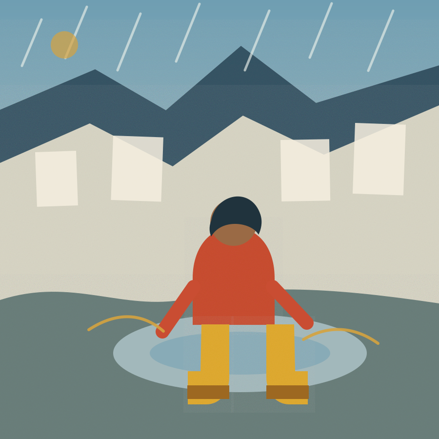
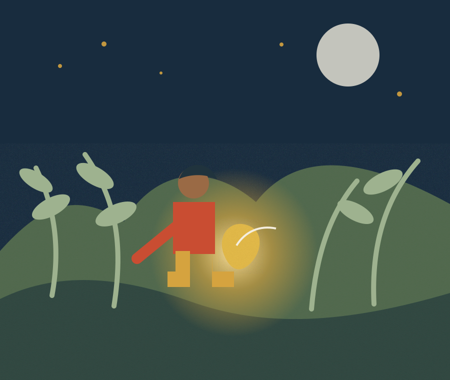
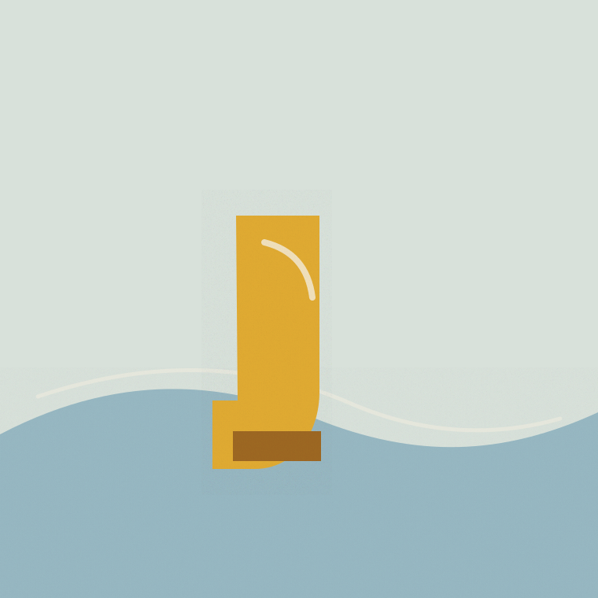

오늘의 이야기제1호 · 비가 온 목요일
우리 아이 이야기 · 09
장화가
구름을 밟은 날
젖은 골목 끝에서 작은 장화 한 켤레가 하늘로 가는 길을 발견했습니다.

우리 아이 이야기 · 09
젖은 골목 끝에서 작은 장화 한 켤레가 하늘로 가는 길을 발견했습니다.

비의 지도는 물에 젖지 않았다.
아이의 첫걸음이 물웅덩이를 누르자, 둥근 파문은 천천히 하늘로 올라갔습니다. 파문마다 구름이 한 장씩 접혔고, 가장 낮은 구름은 종이배가 되었습니다.
“길을 모르면 먼저 물어보면 돼.” 아이가 말하자, 노란 장화의 끈이 가느다란 돛줄로 변했습니다. 배는 서두르지 않고, 대답할 준비가 된 섬부터 찾아갔습니다.
아이의 하루가 바뀐 장면
기록을 보여주는 대신, 한 장면의 감각이 이야기 속에서 어떻게 다른 의미를 얻는지 두 펼침면으로 나란히 놓았습니다.
선택 뒤의 다음 장
버튼을 고르는 게임이 아니라, 다음 장이 가질 수 있는 두 가지 편집 방향을 미리 펼쳐 봅니다.
아이는 모르는 글자 앞에서 멈추지 않고, 나뭇잎 모양의 책갈피에게 먼저 이름을 물어봅니다.

아이는 기다리는 동안 씨앗 옆에 앉아, 대답이 늦어도 질문은 사라지지 않는다는 것을 배웁니다.
두 시안은 분기 가능성을 보여주는 정적 편집 증거이며 실제 선택 흐름이 아닙니다.
씨앗은 곧바로 빛나지 않았다.
아이는 흙 위에 손바닥을 가만히 올렸습니다. 대답이 들리지 않을 때는 한 번 더 묻고, 그래도 조용하면 곁에 앉아 기다렸습니다.
“모른다고 말해도 괜찮아. 그다음 질문이 길을 만들 테니까.”27
비가 온 목요일
이야기의 시작
골목의 마지막 물웅덩이에서, 아이는 하늘로 이어지는 아주 낮은 발자국을 발견했습니다.
오늘의 작은 영감 · 비 온 뒤 오래 바라본 물웅덩이Story Bloom · 이야기 피어남
일상의 물건은 자리를 옮기지 않습니다. 대신 그 주위에 이야기의 층이 차례로 나타나며, 같은 장면이 새로운 의미를 얻습니다.
680ms · reduced-motion 즉시 전환